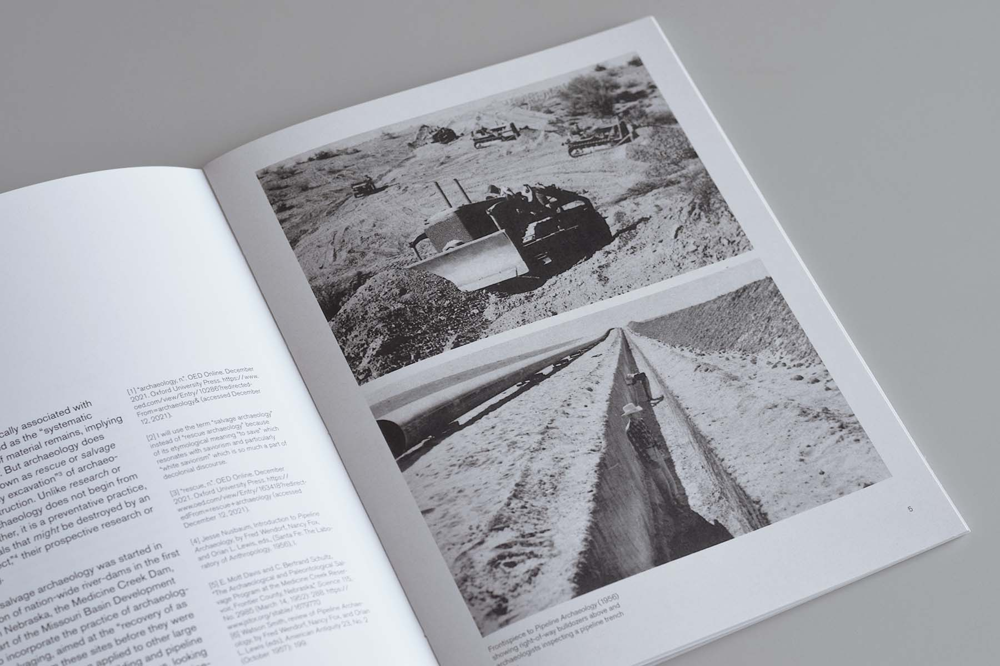
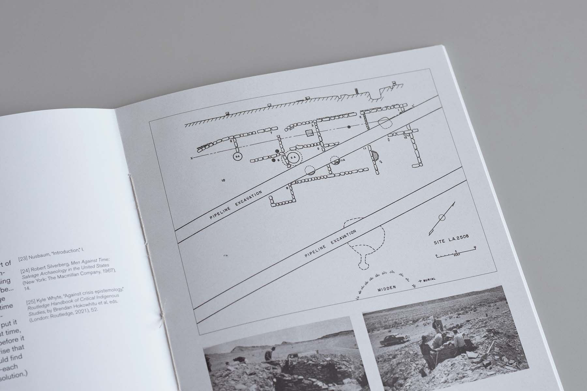
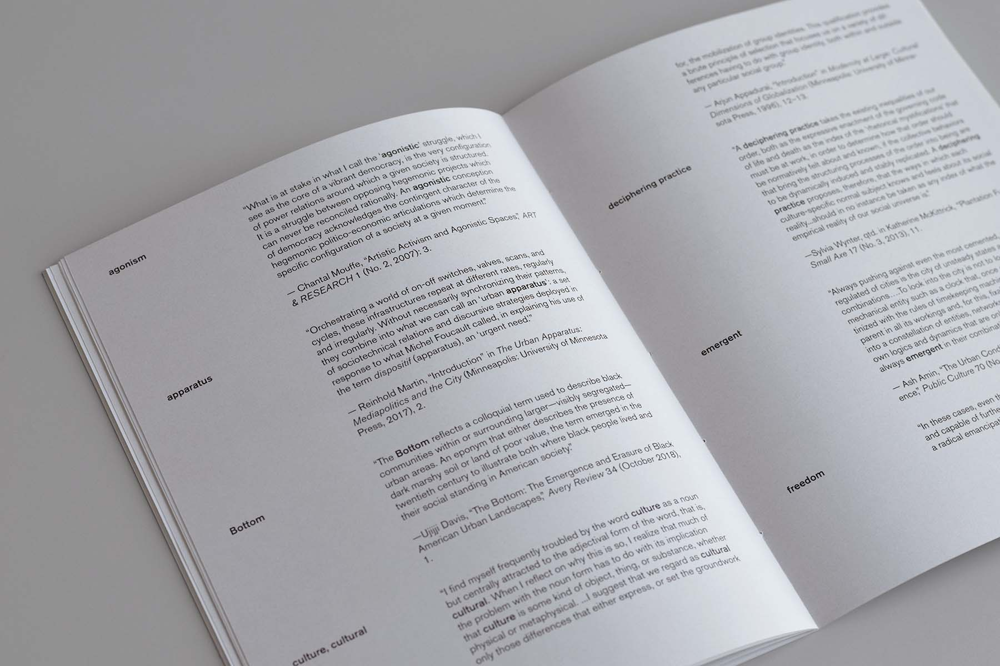

The Right-of-Way Crisis: Constructing Aliveness and Inertness through Pipeline Archaeology
Urban Century, Vyjayanthi Rao
Fall 2021
Archaeology is not a practice typically associated with urgency, but it does indeed have a crisis mode. Known as salvage archaeology, this is the emergency excavation of archaeological sites that fall within the right-of-way of infrastructural construction projects like dams, highways, or pipelines and would otherwise be destroyed. Although large infrastructural projects like these have been identified as part of a settler colonial project because they often take Indigenous land as their source of capital, the archaeological salvaging that accompanied these same projects—which take Indigenous artifacts as a source of cultural capital—have not. My aim in bringing salvage archaeology to bear on this discourse is to widen the scope of what is typically considered part of a settler colonial project in order to situate preservation as key to its epistemology.

The pipeline archaeology operation of the El Paso Natural Gas Company in New Mexico in the early 1950s is a useful case study because it demonstrates the role that crisis plays in preservation. By claiming cultural preservation to be in crisis, the practice of pipeline archaeology normalizes the ideology that the Indigenous cultures it is aiming to preserve are in the past—inert, archaic, nonliving.

While pipeline archaeology does not cause ecological violence in the same way that pipeline construction does, I argue that it enacts epistemological violence by inscribing the boundary between aliveness and inertness. By partitioning life from nonlife in racialized and violent ways, crisis works as an epistemological apparatus that may be weaponized toward colonial ends.
